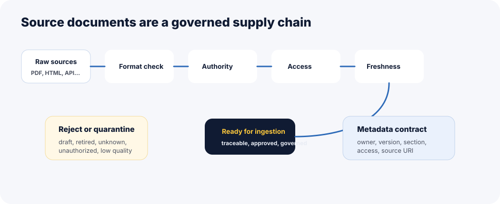

RAG quality starts before retrieval. It starts with the source material: what you allow into the corpus, how trustworthy it is, who owns it, how fresh it is, and whether the system can trace every answer back to it.
How to read this chapter
Read it as corpus design: source documents are not just files; they are the knowledge supply chain for your RAG product.
Compare formats: markdown, PDF, HTML, DOCX, CSV, JSON, APIs, and databases each create different ingestion risks.
Think governance: approved source, owner, version, timestamp, access level, and retirement status matter as much as text content.
Learn the public-course trick: synthetic data lets us teach realistic production patterns without exposing private customer or company data.
A RAG system cannot be more trustworthy than the sources it is allowed to retrieve. If the corpus is stale, noisy, unauthorized, or contradictory, the model will inherit that mess.
Sub-topic 1 of 11
Why Source Documents Matter
At a glance
Sources define what the assistant is allowed to know.
Document quality shapes retrieval quality before embeddings or prompts enter the picture.
Production RAG needs source governance: owner, authority, version, access, and retirement rules.
Why this matters: many teams tune embeddings and prompts while ignoring the real issue: the corpus includes duplicate, outdated, conflicting, or unauthorized documents.
Think of source documents as the raw ingredients for your RAG system. If the ingredients are expired, mislabeled, or mixed with unsafe items, even a skilled chef cannot produce a reliable dish. In RAG, source documents are those ingredients: policies, runbooks, product docs, tickets, knowledge-base articles, PDFs, tables, APIs, and database records.
The first engineering question is not "Which vector database should we use?" It is: "Which sources are approved, current, accessible, parseable, and useful for the user problem?"
Quick recap
Good RAG starts with source selection.
Source authority matters before retrieval ranking.
Every source should be traceable and governable.
Sub-topic 2 of 11
Real-Life Analogy: A Library With Trusted Shelves
Imagine a library where official legal books, old draft notes, student summaries, and random photocopies are all placed on the same shelf without labels. A librarian may retrieve something quickly, but speed does not mean trust.
A production RAG corpus needs labeled shelves. Which documents are official? Which are drafts? Which are retired? Which are restricted? Which are only useful for historical context? Retrieval should not treat all text as equal.
Structured, Semi-Structured, and Unstructured Sources
RAG source design changes depending on how much structure the content already has.
Structured
Tables and databases
Rows, columns, ids, and types are explicit. The challenge is preserving schema, joins, permissions, and exact values.
Semi-structured
JSON, HTML, markdown
There is hierarchy, but extraction choices matter. Headings, keys, anchors, and nesting often carry meaning.
Unstructured
PDFs, DOCX, notes
Text may be long, messy, scanned, or layout-heavy. The challenge is extracting clean text without losing context.
Multimodal
Images, slides, audio, video
Evidence may live in screenshots, charts, diagrams, and transcripts. Source-region citation becomes critical.
Production failure mode
A CSV row is chunked as plain text without column meanings, so "limit: 1000" appears without knowing the unit, customer tier, or effective date.
Engineering checklist
Preserve schema and source hierarchy.
Attach units, ids, owners, and timestamps.
Keep access labels at row, page, or section level.
Metrics to watch
Parse success rate, schema coverage, source traceability, missing metadata rate, and unsupported-answer rate by format.
Sub-topic 5 of 11
Domain-Specific Corpora
A corpus is not just a folder of documents. It is a product boundary. HR, legal, healthcare, security, finance, support, developer docs, and sales enablement all need different source rules.
Case study
Security runbook corpus
A security assistant should not retrieve every internal note that mentions incidents. It should prioritize approved runbooks, access policies, escalation procedures, incident severity definitions, and audit requirements.
Restricted: customer-specific logs and private incident notes.
Historical: postmortems useful for context, but not always policy.
Excluded: draft notes, random chat summaries, unapproved snippets.
Sub-topic 6 of 11
Why Synthetic Data Is Useful for Public Learning
Public RAG courses cannot safely expose real company policies, customer records, contracts, or incident logs. Synthetic data solves that teaching problem when it is designed carefully.
Important: synthetic does not mean fake-quality. Good synthetic corpora should have realistic structure, conflicts, policy versions, access labels, edge cases, and retrieval failure opportunities.
Good synthetic data includes
Realistic document families.
Versioned policies.
Conflicting or retired sources.
Access labels and metadata.
Bad synthetic data looks like
One clean paragraph per answer.
No ambiguity.
No stale sources.
No permission boundaries.
Learning value
It lets learners debug realistic RAG behavior without violating privacy, compliance, or customer trust.
Sub-topic 7 of 11
Architecture View

Source documents pass through trust and governance checks before entering the ingestion pipeline.
Source registry: catalog each source with owner, authority, format, access level, and refresh rule.
Approval workflow: separate approved sources from drafts, retired content, and user notes.
Access labels: enforce permissions before content enters retrieval or prompt context.
Freshness policy: define when sources expire, reindex, or require review.
Contradiction handling: decide which source wins when policies disagree.
Auditability: every answer should trace back to source id, version, and section.
Sub-topic 9 of 11
Common Mistakes
01
Indexing every available file
Symptom: drafts, retired files, and random notes compete with approved sources.
Better move: build a source registry and approval status before ingestion.
02
Losing document hierarchy
Symptom: chunks lose section headings, page numbers, and parent context.
Better move: preserve heading path, page, section, and source URI.
03
Treating PDFs as simple text
Symptom: tables, footnotes, headers, and scanned pages break answer quality.
Better move: validate extraction by layout type and capture OCR/table confidence.
04
Ignoring source ownership
Symptom: nobody knows who can approve, retire, or fix a source.
Better move: every source needs an owner and refresh rule.
05
Mixing public and restricted content
Symptom: retrieval fetches content the user should not see.
Better move: classify access before indexing or enforce permission-aware retrieval.
06
Using synthetic data that is too clean
Symptom: learners never see stale, conflicting, missing, or restricted sources.
Better move: design synthetic corpora with realistic production mess.
Sub-topic 10 of 11
Mini Assignment
Pick one assistant domain: HR, security, legal, customer support, or developer docs. List five source types you would include, three you would exclude, the metadata every source must carry, and one freshness rule.
Sub-topic 11 of 11
Points To Remember
Source documents are the knowledge supply chain for RAG.
Format affects parsing, metadata, and retrieval reliability.
Structured and unstructured sources need different controls.
Domain corpora need approval, access, freshness, and ownership rules.
Synthetic data is valuable when it preserves realistic production complexity.
Next, test source-format judgment in the quiz, then build a source registry in the exercises and project.